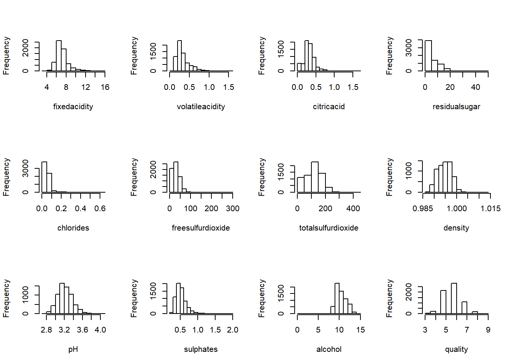
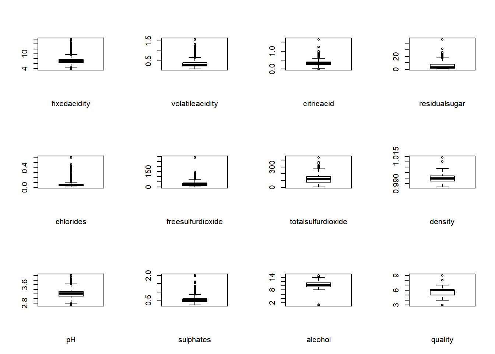
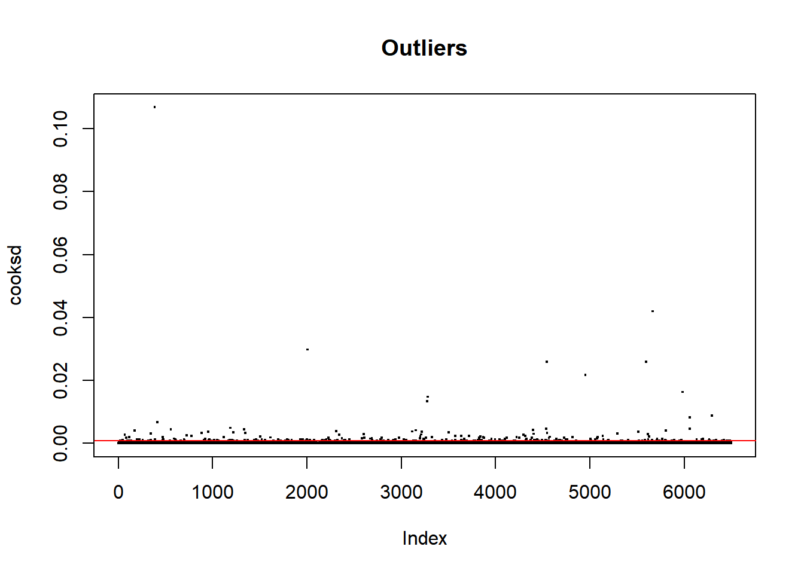

library(readr)
BaseWine_Red_e_White <- read_delim("BaseWine_Red_e_White.csv",
";", escape_double = FALSE, col_types = cols(Vinho = col_factor(levels = c("WHITE",
"RED"))), locale = locale(date_names = "pt",
decimal_mark = ",", grouping_mark = "."),
trim_ws = TRUE)Removemos a coluna id_vinho para não atrapalhar no modelo já que ela não tem nenhuma relação com os vinhos em si.
BaseWine_Red_e_White <- BaseWine_Red_e_White[,2:ncol(BaseWine_Red_e_White)]#comando para gerar em 3 linhas e duas colunas os histogramas
par (mfrow=c(3,4))
hist(BaseWine_Red_e_White$fixedacidity, xlab="fixedacidity", main=NULL)
hist(BaseWine_Red_e_White$volatileacidity, xlab="volatileacidity", main=NULL)
hist(BaseWine_Red_e_White$citricacid, xlab="citricacid", main=NULL)
hist(BaseWine_Red_e_White$residualsugar, xlab="residualsugar", main=NULL)
hist(BaseWine_Red_e_White$chlorides, xlab="chlorides", main=NULL)
hist(BaseWine_Red_e_White$freesulfurdioxide, xlab="freesulfurdioxide", main=NULL)
hist(BaseWine_Red_e_White$totalsulfurdioxide, xlab="totalsulfurdioxide", main=NULL)
hist(BaseWine_Red_e_White$density, xlab="density", main=NULL)
hist(BaseWine_Red_e_White$pH, xlab="pH", main=NULL)
hist(BaseWine_Red_e_White$sulphates, xlab="sulphates", main=NULL)
hist(BaseWine_Red_e_White$alcohol, xlab="alcohol", main=NULL)
hist(BaseWine_Red_e_White$quality, xlab="quality", main=NULL)
par (mfrow=c(3,4))
boxplot(BaseWine_Red_e_White$fixedacidity, xlab="fixedacidity", main=NULL)
boxplot(BaseWine_Red_e_White$volatileacidity, xlab="volatileacidity", main=NULL)
boxplot(BaseWine_Red_e_White$citricacid, xlab="citricacid", main=NULL)
boxplot(BaseWine_Red_e_White$residualsugar, xlab="residualsugar", main=NULL)
boxplot(BaseWine_Red_e_White$chlorides, xlab="chlorides", main=NULL)
boxplot(BaseWine_Red_e_White$freesulfurdioxide, xlab="freesulfurdioxide", main=NULL)
boxplot(BaseWine_Red_e_White$totalsulfurdioxide, xlab="totalsulfurdioxide", main=NULL)
boxplot(BaseWine_Red_e_White$density, xlab="density", main=NULL)
boxplot(BaseWine_Red_e_White$pH, xlab="pH", main=NULL)
boxplot(BaseWine_Red_e_White$sulphates, xlab="sulphates", main=NULL)
boxplot(BaseWine_Red_e_White$alcohol, xlab="alcohol", main=NULL)
boxplot(BaseWine_Red_e_White$quality, xlab="quality", main=NULL)
mod <- lm(quality ~ ., data=BaseWine_Red_e_White)
cooksd <- cooks.distance(mod)
plot(cooksd, pch=".", cex=2, main="Outliers")
abline(h = 4*mean(cooksd, na.rm=T), col="red") # Linha de corte
#text(x=1:length(cooksd)+1, y=cooksd, labels=ifelse(cooksd>4*mean(cooksd, na.rm=T),names(cooksd),""), col="red") # add labels```influential = 4*mean(cooksd, na.rm=T) # influential row numbers
head(BaseWine_Red_e_White[influential, ]) # influential observations.## # A tibble: 0 x 13
## # ... with 13 variables: fixedacidity <dbl>, volatileacidity <dbl>,
## # citricacid <dbl>, residualsugar <dbl>, chlorides <dbl>,
## # freesulfurdioxide <dbl>, totalsulfurdioxide <dbl>, density <dbl>, pH <dbl>,
## # sulphates <dbl>, alcohol <dbl>, quality <dbl>, Vinho <fct>